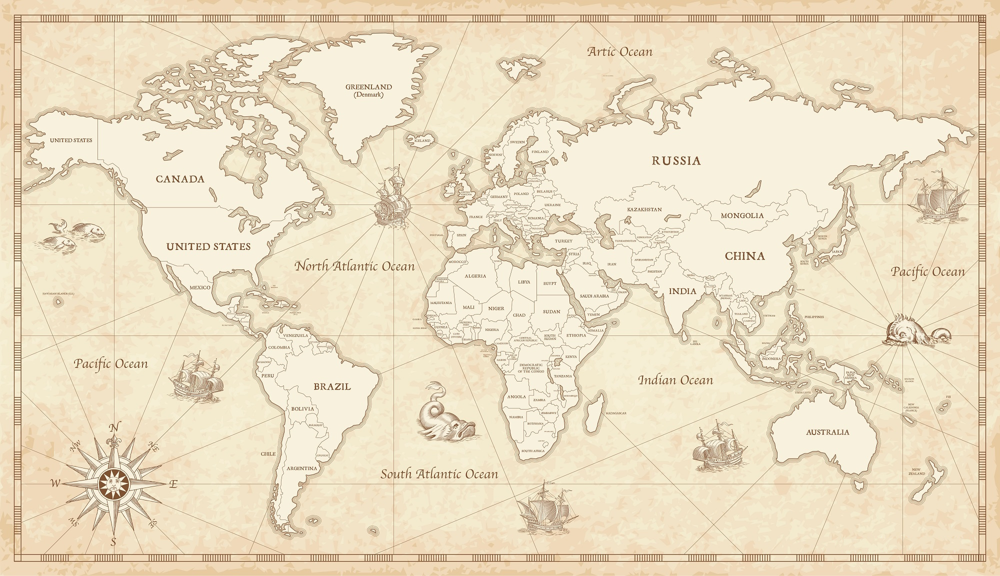
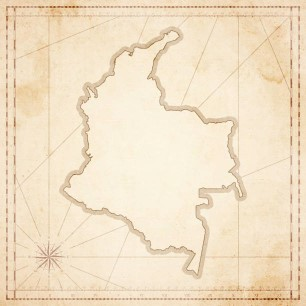
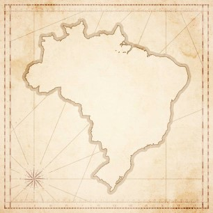
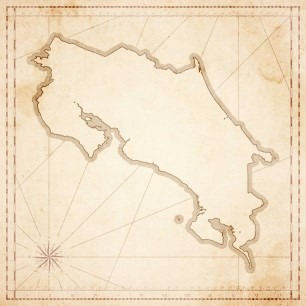
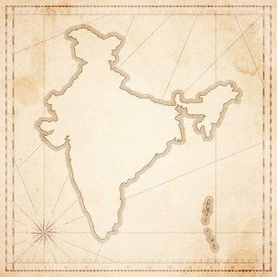
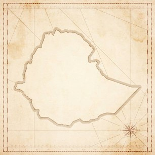

Variedades
En nuestra cafetería, ofrecemos una selección de cafés de especialidad provenientes de las regiones más destacadas del mundo. Cada variedad es cuidadosamente seleccionada por su origen único, altitud de cultivo y las dedicadas prácticas de nuestros proveedores locales. A continuación, te invitamos a explorar las distintas variedades de café que tenemos para ti, cada una con su propio perfil de sabor y carácter distintivo.
Café de Colombia

Café de Brasil

Café de Costa Rica

Café de India

Café de Etiopía
